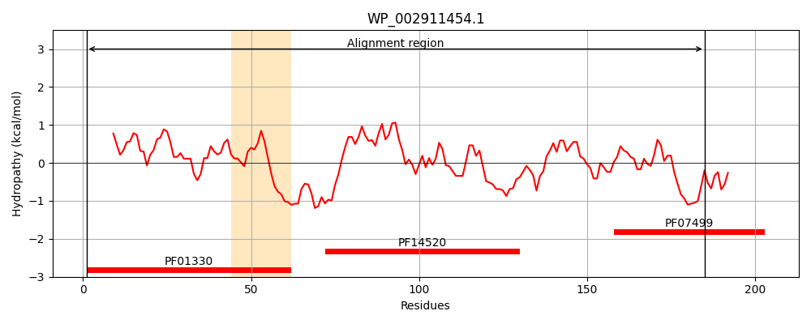
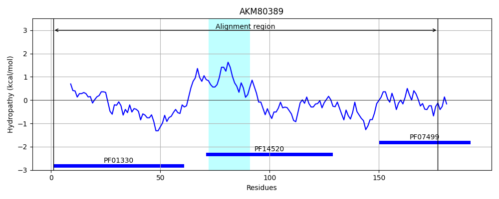
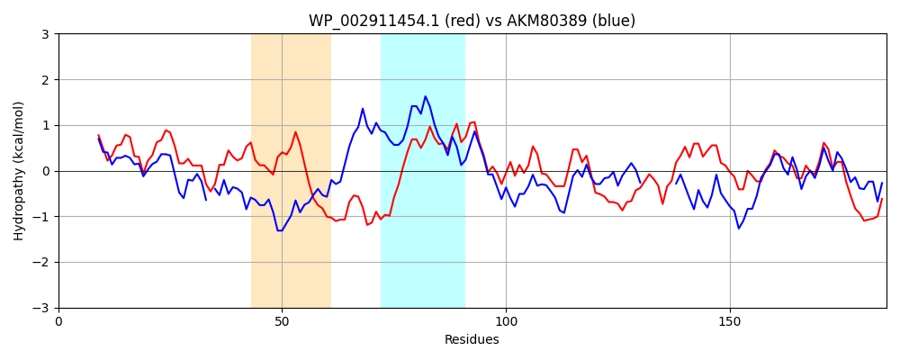

Hit Accession: AKM80389
Hit TCID: 3.A.11.1.5
Hit Description: gnl|BL_ORD_ID|1264 gnl|TC-DB|AKM80389.1|3.A.11.1.5 Holliday junction ATP-dependent DNA helicase RuvA [Candidatus Saccharibacteria bacterium GW2011_GWC2_44_17]
Mach Len: 185
e:0.000000
Query TMS Count : 1
Hit TMS Count: 1
TMS-Overlap Score: 0.000000
Predicted Substrates:None
BLAST Alignment:
Score: 254 , Bit scores: 102 bits, E-value: 1.9e-27, Alignment length: 185, Percentage identity: 35
Query: 1 MIGRLRGIILEKQPPLVLLETAGVGYEVHMPMTCFYELPEAGQEAIVFTHFVVREDAQLLYGFNNKQERTLFKELIKTNGVGPKLALAILSGMSAQQFVNAVEREEVASLVKLPGIGKKTAERLIVEMKDRFKGLHGDLFTPAADLVLTSPAGPTADDAEQEAVAALVALGYKPQEASRMVSKIA 185
MI + G + EK V+++ GVGYE+ P+ YE G+E +T+ +RE +Q L+GF+ + LF+ LI GVGPK ALAIL ++ NA+ + + K G+GKKTAER++V++ D+ + P TS A + EA+ AL+ALGY +AS+ + ++
Sbjct: 1 MIAHVYGSVAEKFNNSVIVDVHGVGYEIQTPLGD-YEHAVLGEEVKFYTYHHIREQSQDLFGFSTLAAKKLFELLITVQGVGPKAALAILGLGESETVRNAIANNDATYITKASGVGKKTAERVVVDLSDK-------VGMPLYYDNKTSTGISQAIEHSDEALEALMALGYNLNDASKALEGVS 177 | Protein Hydropathy Plots: |
|---|
|  |  |
Pairwise Alignment-Hydropathy Plot:
|
|---|
|  |